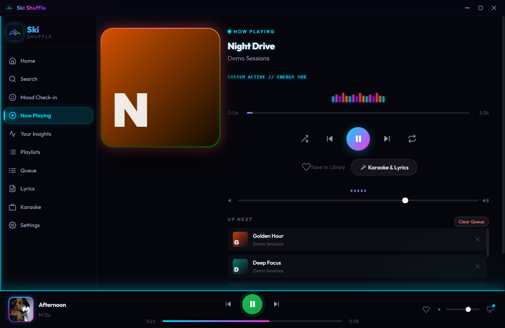
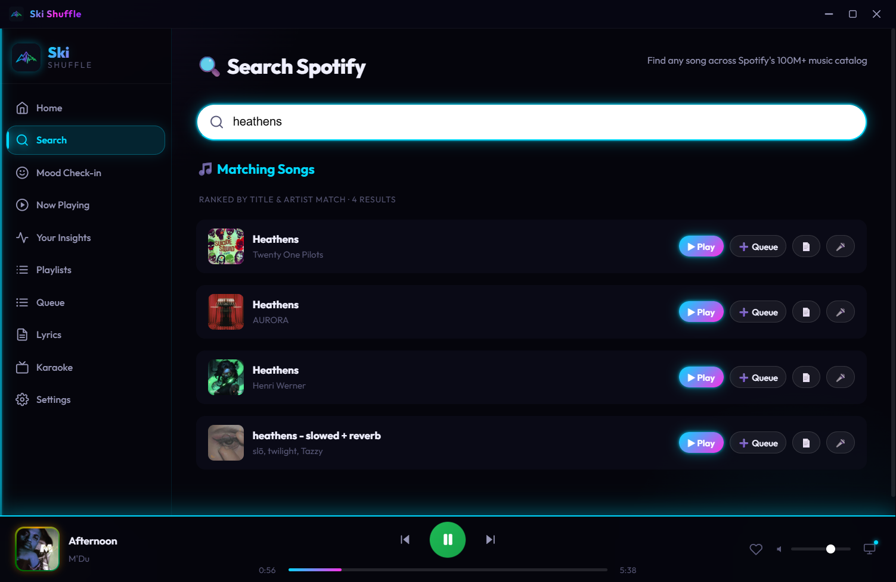

A desktop music companion that turns "how's your day going?" into a queue. Mood check-in, quick vibes, live playback, lyrics, karaoke and listening insights — with a built-in demo mode so it runs even without a Spotify account.


Three steps: describe the day, pick genres, set energy. The queue follows the mood.
Energetic, Chill, Focus, Sad, Hype, Late Night, Workout, Feel Good — one click each.
In-app YouTube karaoke when a key is configured; otherwise an exact YouTube search plus synced lyrics.
Synced lyrics view with timed highlighting and per-track caching.
Mood sessions, top genres, energy trends and listening streaks.
Always-on-top mini player that mirrors the live session and hides when disconnected.
Screenshots are from the running Windows build. The installer is a local 92 MB build; it is not published on this page.